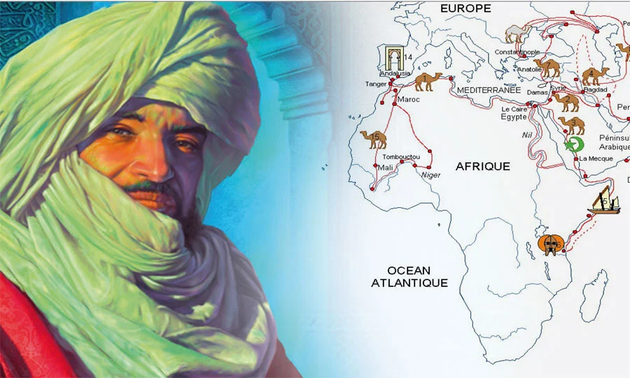
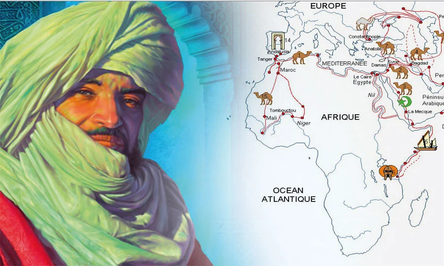

Ibn Battuta
Abu Abdullah Muhammad ibn Battutah 24 February 1368/1369,commonly known as Ibn Battuta, was a Maghrebi traveller, explorer and scholar.Over a period of thirty years from 1325 to 1354, Ibn Battuta visited most of North Africa, the Middle East, East Africa, Central Asia, South Asia, Southeast Asia, China, the Iberian Peninsula, and West Africa.
 

The Voyage
In nearly 30 years on the road, Ibn Battuta traversed North Africa, Egypt, and the Swahili coast; reached Mecca on the Arabian Peninsula, visiting Palestine and Greater Syria en route; swung through Anatolia and Persia to Afghanistan; crossed the Himalayas to India, then Sri Lanka and the Maldives; and reached the eastern coast of China before turning around and zigzagging all the way back to Morocco. Not yet satisfied, he added on a few more years criss-crossing the Sahara. He traveled farther and discovered more than his famous contemporary Marco Polo.
Throughout his decades on the road, Ibn Battuta collected copious observations and insights. These were recorded in his later years by a young scribe who, at the urging of Morocco's sultan, spent many months transcribing Ibn Battuta's tale, ultimately compiling A Gift to Those who Contemplate the Wonders of Cities and the Marvels of Traveling, more commonly known as al-Rihla (الرحلة) or “The Travels.”
Later Years and Death
Ibn Battuta made many journeys in his life. In 1356, the ruler of Morocco asked a young scholar named Ibn Juzayy to write down Ibn Battuta’s explorations. They would work for two years. This book of travel is called a rihla. It means “journey” in Arabic. After completing the book, Ibn Battuta continued his role as judge in a small Moroccan town. He died around 1368 or 1369. His incredible story became very popular, especially among the Islamic world.
Muslim
Ibn Battuta is celebrated as one one of the most famous Muslim explorers in history, and one of the great travelers of all time. His sea voyages and references to shipping show that the Muslims were very much involved in trading, commerce, and maritime activity of the Red Sea, the Arabian Sea, and Indian Ocean. Almost everything we know of his travels is known because he told his story and had it written down later in his life. His rihla offers a unique account on Islamic and medieval history.